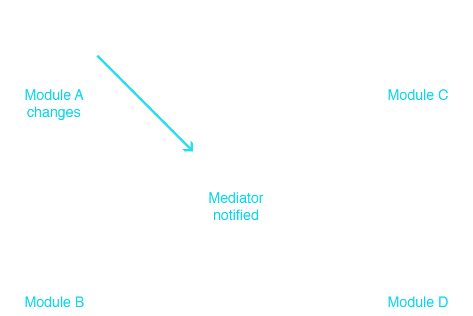

Event driven architecture
What's Inside?
DOM Events
Custom Events
Pub/Sub Design Pattern
(AKA Observer)
Fabien Doiron
Software Developer - Front End


DOM Events
Mouse Events
click, dblclick, mousedown, mouseup, mouseover…
Keyboard Events
keydown, keypress, keyup
Form Events
select, change, submit, reset, focus, blur…
Other Events
load, unload, error, resize, scroll…
Usage
TARGET.addEventListener( 'click', fn, false );
TARGET.removeEventListener( 'click', fn, false );
Third parameter 'useCapture' is now optional
including it is safer
Capturing & Bubbling
2 phases of event propagation
Capturing Phase
Starts at the outer most element
Ends at the inner most element
Can generally be ignored
Bubbling Phase
Starts at the inner most element
Ends at the outer most element
Extremely useful

from W3C
Why is this useful?
How exactly does it work?
Events are fired from the inner most element
E.g. Children of the element with the event listener
DIV.addEventListener( 'click', function ( evt ) {
// log: evt.target.nodeName;
}, false );So…
$( PARENT ).on( 'click', CHILD, fn );
Note: Not all events bubble
load, unload, focus, blur…
Custom Events
What?
Events initialized by the application
Can be anything you want
Why?
Loosely coupled architecture
Smaller units of code
Easier to test
Set a listener
TARGET.addEventListener(
'heyOttawaJS',
function ( event ) {
console.log( event.detail.message );
}
);Create a custom event
var cEvt = new CustomEvent(
'heyOttawaJS',
{
detail: {
message: 'badass!'
},
bubbles: false,
cancelable: false
}
);Trigger a custom event
TARGET.dispatchEvent( cEvt );In action
Pub/Sub pattern
AKA Observer
Intent
Define one-to-many dependency between objects
One object changes, notify and update all dependencies
Adding a mediator to your app
Central location to handle communication
Modules don't need to know anything about other modules
Modules can focus on the single responsibility principle
Air traffic control

Metaphor from Addy Osmani: Scalable JS Design Patterns
Module notifies mediator

Mediator notifies modules

Taking it further
Tons of pub/sub libraries
Yes, jQuery has an implementation, sort of
using 'on' and 'trigger'
Not too complex to write
Benefits
Loosely coupled code
Easy to add functionality
Easy to test code
Cons
assume that subscribers exist
not easy to resolve a failed publisher
increased number of messages can lead to instabilities
The feeling you'll get using an
event driven architecture